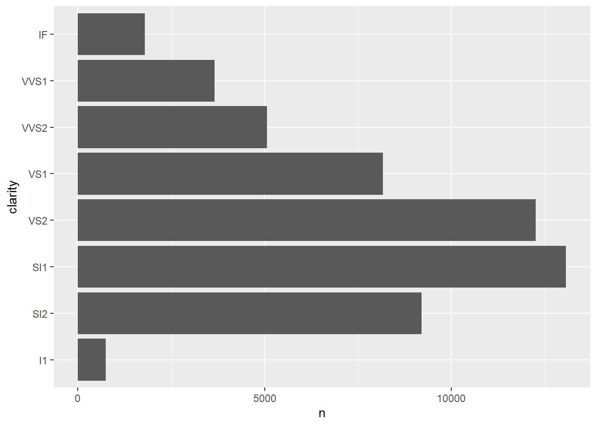
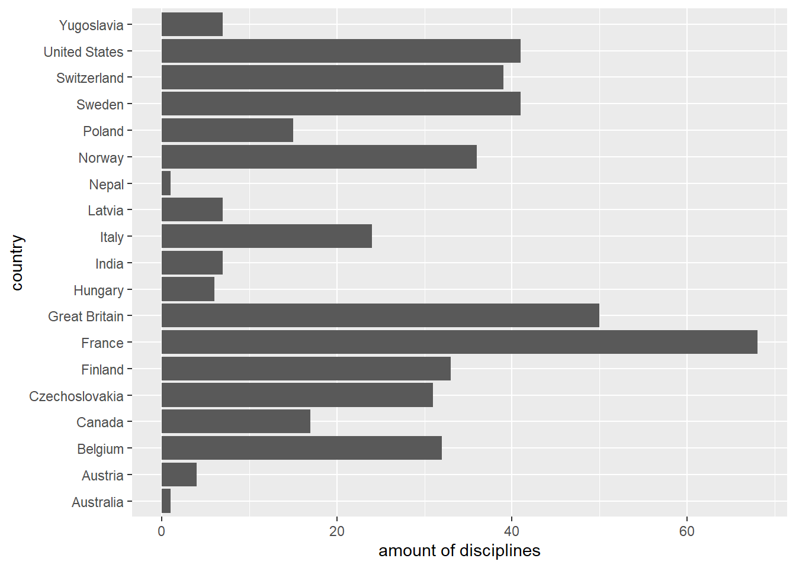
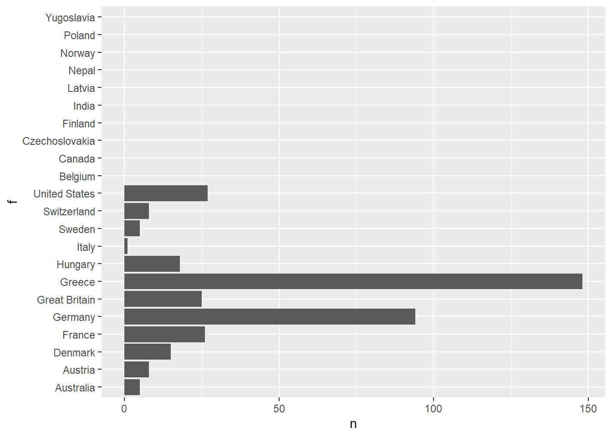
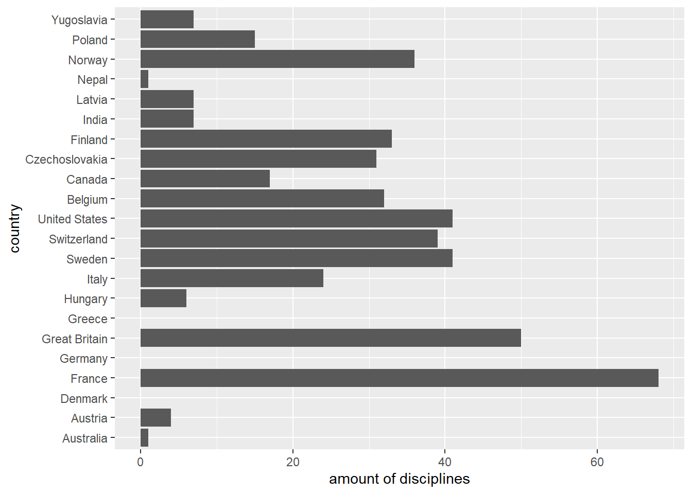
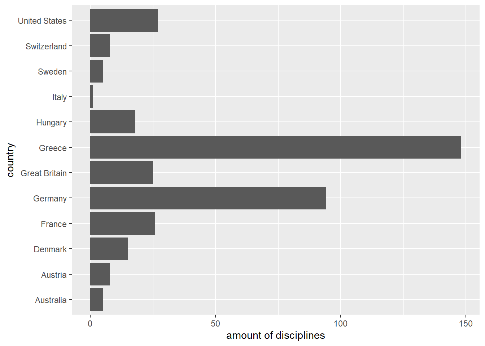
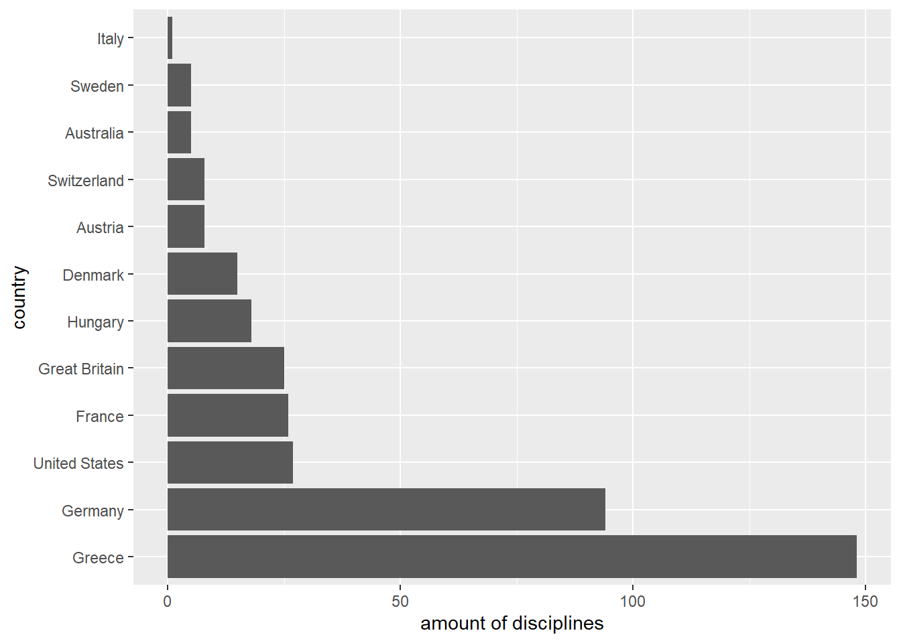
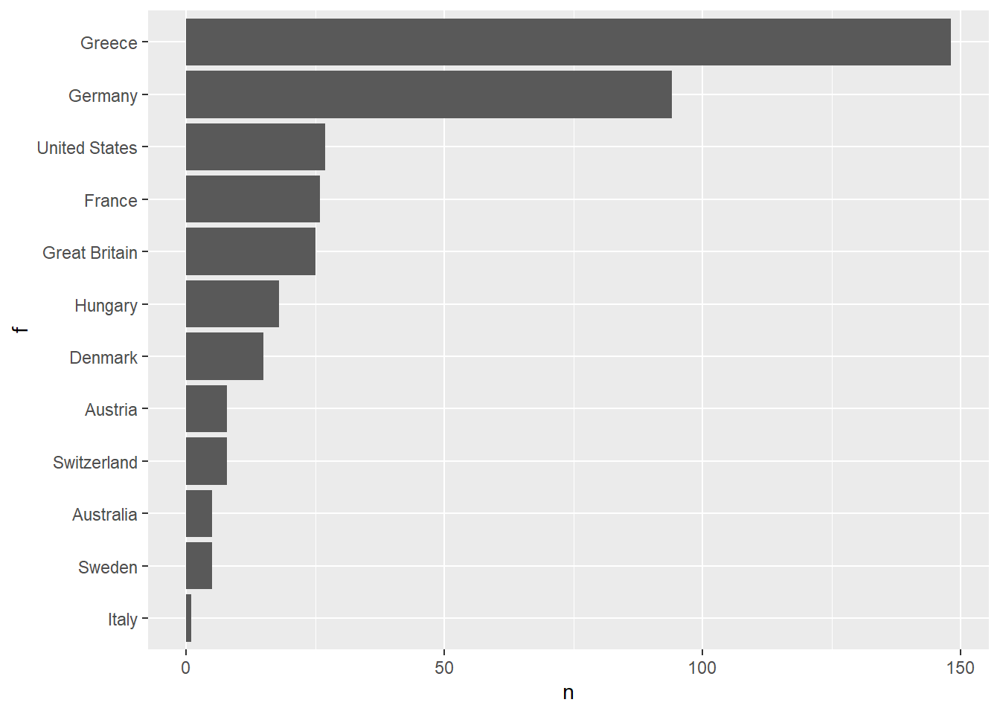
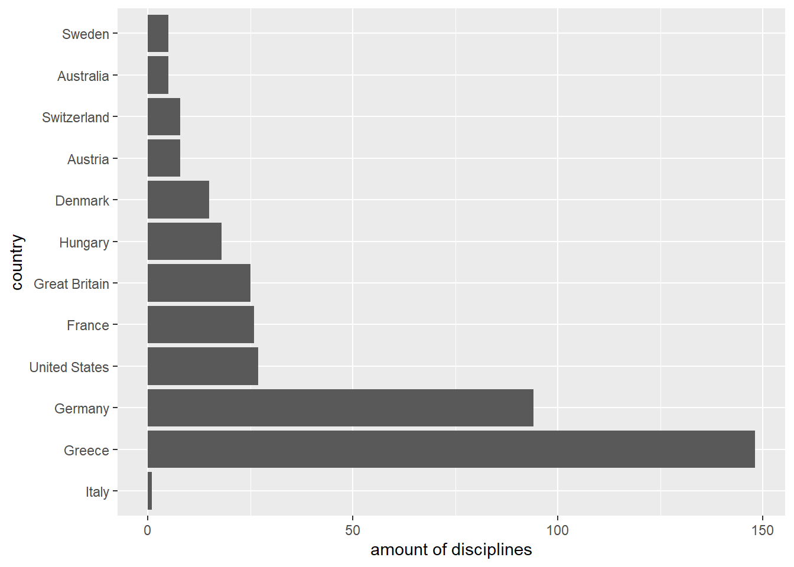

5 Categorical data: forcats
5.1 Introduction
This chapter is dedicated to the handling of categorical variables. This becomes important if information is to be presented in a non-alphabetical order or aggregated in a meaningful way. Within the R programming language, categorical variables are converted into a form that can be used for analysis using factors. While many Base-R functions automatically convert character vectors into factors, tidyverse requires an explicit treatment. The core-tidyverse provides the package forcats, which will be described here. Further information and exercises are available at the sources shown.
Resources:
In this chapter we use the demo data set diamonds from the ggplot2-package (more information) as well as a dataset olympic-games which shows the medal success of olympic athletes from 1896 to 2016. For the latter we focus on the summer games 1896 and the winter games 1924 for practical reasons.
Before you start reading, you should have read the chapter Wrangling Data: dplyr or be familiar with this field.
# The package tidyverse contains all libraries necessary for this chapter.
library(tidyverse)
# Importing the "diamonds" dataset.
diamonds <- read_csv("data/diamonds.csv")
# Importing the "olympic-games" dataset.
olympic <- read_csv("data/olympic-games.csv")
# Have a short look at the data.
head(diamonds, 2)## # A tibble: 2 x 10
## carat cut color clarity depth table price x y z
## <dbl> <chr> <chr> <chr> <dbl> <dbl> <dbl> <dbl> <dbl> <dbl>
## 1 0.23 Ideal E SI2 61.5 55 326 3.95 3.98 2.43
## 2 0.21 Premium E SI1 59.8 61 326 3.89 3.84 2.31## # A tibble: 2 x 12
## game city sport discipline athlete country age height weight bmi sex
## <chr> <chr> <chr> <chr> <chr> <chr> <chr> <dbl> <dbl> <dbl> <chr>
## 1 1992~ <NA> Bask~ Basketbal~ A Diji~ China 24 180 80 24.7 M
## 2 2012~ <NA> Judo Judo Men'~ A Lamu~ China 23 170 60 20.8 M
## # ... with 1 more variable: medal <chr>5.2 General functions
5.2.1 Create
Basically two things are needed to create a factor:
- a vector which contains the values to be analyzed
- another vector which divides the values into levels
As an example we will use the column clarity of the diamonds dataset.
It is a categorical evaluation of the clarity of a diamond and a subset of the grades according to the Gemological Institute of America (GIA) grading system. The grades according to GIA read as follows:
| GIA grade | Category | Included in diamonds |
|---|---|---|
| FL | Flawless | ✘ |
| IF | Internally Flawless | ✔ |
| VVS1 | Very Very Slightly Included1 | ✔ |
| VVS2 | Very Very Slightly Included2 | ✔ |
| VS1 | Very Slightly Included1 | ✔ |
| VS2 | Very Slightly Included2 | ✔ |
| SI1 | Slightly Included1 | ✔ |
| SI2 | Slightly Included2 | ✔ |
| I1 | Included1 | ✔ |
| I2 | Included2 | ✘ |
| I3 | Included3 | ✘ |
If you are interested in the distribution of the diamonds in this category, you could do this by using a suitable query:
# Count the number of observations per clarity grade and plot the result.
diamonds %>%
group_by(clarity) %>%
count() %>%
ggplot(aes(x = n, y = clarity)) +
geom_col()
A sorting of the x-axis, which follows the order of the grades as shown in the table above, is unfortunately not possible in this form. A workaround is to convert the column clarity into a factor, which allows us to evaluate the individual categories. For this purpose we first define a vector, which ranks the categories according to their grade (from bad to good):
In the next step we lay this newly created levels vector on the column clarity of our data set to create a factor. The function factor() is a base-R function.
The factor factor_clarity consists solely of the clarity column of the original diamonds data set.
Another possibility to create a factor is to convert a vector using as_factor(). Here the levels are created automatically. Their order however depends on the appearance of the corresponding value in the source vector.
## [1] "SI2" "SI1" "VS1" "VS2" "VVS2" "VVS1" "I1" "IF"5.2.2 Count values per level
Now we repeat the analysis of the distribution within our dataset using the created factor with the levels in correct order. The function fct_count() returns the frequency of a categorical value within a factor. The order of the levels remains unchanged.
fct_count(factor_clarity) %>%
# The definition of aesthetic mapping in this line is only used to label the axes.
ggplot(aes(x = n, y = clarity)) +
geom_col(aes(x = n, y = f))
It becomes obvious that the distribution can now be displayed in the desired order (by order of levels). Functions of the package forcats always start with the prefix fct_.
5.2.3 Inspect and set levels
With the function levels() the levels of a factor can be both read and renamed. But be aware: this can only be used to change the names, not the order of the levels. The base-R function unclass() gives information about the internal memory structure of a factor.
## [1] "I1" "SI2" "SI1" "VS2" "VS1" "VVS2" "VVS1" "IF"## [1] 2 3 5 4 2 6 7 3 4 5 3 5 3 2 2 1 2 3 3 3 2 4 5 3 3
## attr(,"levels")
## [1] "I1" "SI2" "SI1" "VS2" "VS1" "VVS2" "VVS1" "IF"# Keep the order of levels,
# but replace the technical GIA jargon with something more understandable.
levels_clarity_c <- c("c8", "c7", "c6", "c5", "c4", "c3", "c2", "c1")
levels(factor_clarity) <- levels_clarity_c
factor_clarity %>%
head(25)## [1] c7 c6 c4 c5 c7 c3 c2 c6 c5 c4 c6 c4 c6 c7 c7 c8 c7 c6 c6 c6 c7 c5 c4 c6 c6
## Levels: c8 c7 c6 c5 c4 c3 c2 c15.2.4 Inspect unique values
The function fct_unique() can be used to output unique values of a factor. In contrast to the base-R function unique() the values are returned in the order of the levels and not in the order of their appearance.
## [1] c8 c7 c6 c5 c4 c3 c2 c1
## Levels: c8 c7 c6 c5 c4 c3 c2 c1## [1] c7 c6 c4 c5 c3 c2 c8 c1
## Levels: c8 c7 c6 c5 c4 c3 c2 c15.3 Combine factors
5.3.1 Combine factors with different levels
With the function fct_c() factors with different levels can be combined to one factor covering all levels. First we create two factors. The first one shows the amount of contested disciplines by several countries during the Summer Olympic Games 1896. The second one shows the amount of contested disciplines by countries during the Winter Olympic Games 1924.
olympic_1896 <- olympic %>%
filter(game == "1896 Summer")
# Create a factor using the default for the `levels` argument in `factor()`.
countries_in_1896 <- factor(olympic_1896$country)
olympic_1924 <- olympic %>%
filter(game == "1924 Winter")
# Create a factor using the default for the `levels` argument in `factor()`.
countries_in_1924 <- factor(olympic_1924$country)Note that the default option for the levels argument in factor() is a sorted set of the given values. As R sorts characters lexicographically, the corresponding levels are the countries sorted alphabetically from A to Z.
The factors differ both in their stored values and in their levels. A plot makes this clear:
countries_in_1896 %>%
fct_count() %>%
ggplot(aes(x = `amount of disciplines`, y = country))+
geom_col(aes(x = n, y = f))
countries_in_1924 %>%
fct_count() %>%
ggplot(aes(x = `amount of disciplines`, y = country))+
geom_col(aes(x = n, y = f))
Now we combine the factors with fct_c() and plot it:
fct_c(countries_in_1896, countries_in_1924) %>%
fct_count() %>%
ggplot(aes(x = `amount of disciplines`, y = country))+
geom_col(aes(x = n, y = f))Both the underlying values and the levels were combined into one factor.
5.3.2 Standardise levels of various factors
With the function fct_unify() the levels of different factors can be standardised. The resulting output factors will retain their values, but all will have the same levels. Please note, both input and output are in list form.
factor_list <- fct_unify(list(countries_in_1896, countries_in_1924))
# Plot the first output factor.
factor_list[[1]] %>%
fct_count() %>%
ggplot(aes(x = `amount of disciplines`, y = country)) +
geom_col(aes(x = n, y = f))
# Plot the second output factor.
factor_list[[2]] %>%
fct_count() %>%
ggplot(aes(x = `amount of disciplines`, y = country)) +
geom_col(aes(x = n, y = f))
In this case, the underlying values were left unchanged for both factors, but the levels were standardised. This is especially useful when comparing the values of two different factors.
5.4 Order of levels
5.4.1 Manual reordering of levels
With the function fct_relevel() the levels of a factor can be manually reordered. In contrast to the function levels(), which only allows the renaming of factor levels, fct_relevel() also adjusts the order of the levels themselves, that is the way they are stored internally. An example should clarify this.
## # A tibble: 8 x 2
## f n
## <fct> <int>
## 1 c8 741
## 2 c7 9194
## 3 c6 13065
## 4 c5 12258
## 5 c4 8171
## 6 c3 5066
## 7 c2 3655
## 8 c1 1790# Reorder levels according to `new_oder`.
new_order <- c("c1","c3","c5","c7","c2","c4","c6","c8")
factor_clarity %>%
fct_relevel(new_order) %>%
fct_count()## # A tibble: 8 x 2
## f n
## <fct> <int>
## 1 c1 1790
## 2 c3 5066
## 3 c5 12258
## 4 c7 9194
## 5 c2 3655
## 6 c4 8171
## 7 c6 13065
## 8 c8 741Keep in mind, only the function fct_relevel() allows a correct manual releveling, while levels() only allows to change the levels’ names.
5.4.2 Reordering by frequency
Especially for plots it is often useful to orient the order of the levels on the frequency of the corresponding values. The function fct_infreq() allows exactly this. Plotting the unsorted factor leads to a difficult readability.
countries_in_1896 %>%
fct_count() %>%
ggplot(aes(x = `amount of disciplines`, y = country)) +
geom_col(aes(x = n, y = f))
The better approach is to sort the data before plotting.
# Insert `fct_infreq()` to get the data ordered.
countries_in_1896 %>%
fct_infreq() %>%
fct_count() %>%
ggplot(aes(x = `amount of disciplines`, y = country)) +
geom_col(aes(x = n, y = f))
5.4.3 Reordering by appearance
The package forcats offers with the function fct_inorder() the possibility to orientate the order of the levels of a factor to the occurence of the corresponding values in the data set. To make this clear, we take a look at the first 15 entries in the corresponding data set:
## [1] "Greece" "Greece" "Greece" "Greece"
## [5] "Greece" "Greece" "Greece" "Greece"
## [9] "Greece" "Greece" "Great Britain" "Great Britain"
## [13] "Great Britain" "Switzerland" "Greece"Create a factor with levels in the order of the appearance shown above:
## [1] "Greece" "Great Britain" "Switzerland" "United States"
## [5] "Germany" "France" "Hungary" "Australia"
## [9] "Austria" "Denmark" "Italy" "Sweden"In this example the same result can be obtained using the function as_factor(). However the function fct_inorder() can also be applied to already existing factors.
5.4.4 Reverse level order
The function fct_rev() reverses the existing order of the levels of a factor. First have a look at the original order:
# Insert `fct_infreq()` to get the data ordered.
countries_in_1896 %>%
fct_infreq() %>%
fct_count() %>%
ggplot(aes(x = `amount of disciplines`, y = country)) +
geom_col(aes(x = n, y = f))
Now we reverse the order:
# Insert `fct_infreq()` to get the data ordered.
countries_in_1896 %>%
fct_infreq() %>%
# Insert `fct_rev()` to reverse this order.
fct_rev() %>%
fct_count() %>%
ggplot(aes(x = `amount of disciplines`, y = country)) +
geom_col(aes(x = n, y = f))
5.4.5 Shift levels
The argument n in the function fct_shift() allows to shift the levels to the left (right) for negative (positive) integer values of n, wrapping around end.
Thus a value of n = 1L (n = -1L) would shift the order of the levels to the right (left) by one location.
# Insert `fct_infreq()` to get the data ordered.
countries_in_1896 %>%
fct_infreq() %>%
# Insert `fct_shift()` to shift levels.
fct_shift(n = -1L) %>%
fct_count() %>%
ggplot(aes(x = `amount of disciplines`, y = country)) +
geom_col(aes(x = n, y = f))
5.4.6 Randomly shuffle levels
The level of a factor can also be randomly shuffled using fct_shuffle(). The input argument can be either a factor or a character vector, whereas the output will be a factor. By way of example, this is demonstrated using the factor countries_in_1896:
## [1] "Australia" "Austria" "Denmark" "France"
## [5] "Germany" "Great Britain" "Greece" "Hungary"
## [9] "Italy" "Sweden" "Switzerland" "United States"## [1] "Great Britain" "United States" "Austria" "Germany"
## [5] "Denmark" "Greece" "Australia" "Hungary"
## [9] "Sweden" "France" "Italy" "Switzerland"5.4.7 Reordering levels by other variables
The functions presented in this section bare great similarity to the fct_relevel() function introduced in the beginning of this section.
fct_relevel() allows for a direct manipulation of the levels by passing the new order to the levels keyword argument. In this regard fct_reorder() and fct_reorder2() are different. Here the levels are reordered according to the result of a function applied to one vector x in case of fct_reorder() and two vectors x and y in case of fct_reorder2().
- Note: We want to point out a few things that have to be kept in mind when using these functions
- The length of the factor
fto be reordered has the be equal to the lenght of the vector(s) passed to the function. That is an error will be provoked, iflength(f) != length(x)orlength(f) != length(y). - In case the function returns the same value for two different elements of the vector(s), R will arrange the levels automatically.
- In case there are multiple occurences of an element, the level assigned to this element will be based on the result of the function for the first corresponding elements in
x(andy).
- The length of the factor
The example below is intended to unravel this behavior for fct_reorder(). We count the occurences of countries in the olympic_1896 dataset and create a factor where the levels are sorted based on the number of occurences.
disciplines_per_country_in_1896 <- olympic_1896 %>%
count(country)
# Reorder the countries according to the number of disciplines.
disciplines_per_country_in_1896$country %>%
fct_reorder(disciplines_per_country_in_1896$n, .desc = TRUE)## [1] Australia Austria Denmark France Germany
## [6] Great Britain Greece Hungary Italy Sweden
## [11] Switzerland United States
## 12 Levels: Greece Germany United States France Great Britain ... Italy5.5 Change the value of levels
5.5.1 Renaming the levels
Let’s say you want to change the name of the levels (which also impies changing the corresponding value elements) because you are unhappy with the current naming. fct_recode() allows to manually assign new names to certain levels, without affecting the order of the levels or having an impact on levels that are not included in the function call.
The diamonds$clarity column is an ideal example for the use of fct_recode(). For you conviniece we repeat some of the steps made in the beginning of this chapter:
# Define the correct order of the levels in ascending order.
levels_clarity <- c("I1", "SI2", "SI1", "VS2", "VS1", "VVS2", "VVS1", "IF")
# Make `diamonds$clarity` a factor and assign the correctly ordered levels.
factor_clarity <- factor(x = diamonds$clarity, levels = levels_clarity)
# Since the level notation is somewhat cryptic, we want to change it.
renamed_factor_clarity <- factor_clarity %>%
fct_recode(`Included 1 (worst)`="I1",
`Slightly Included 2`="SI2",
`Slightly Included 1`="SI1",
`Very Slightly Included 2`="VS2",
`Very Slightly Included 1`="VS1",
`Very Very Slightly Included 2`="VVS2",
`Very Very Slightly Included 1`="VVS1",
`Internally Flawless (best)`="IF")
# Show the renamed levels.
renamed_factor_clarity %>%
levels()## [1] "Included 1 (worst)" "Slightly Included 2"
## [3] "Slightly Included 1" "Very Slightly Included 2"
## [5] "Very Slightly Included 1" "Very Very Slightly Included 2"
## [7] "Very Very Slightly Included 1" "Internally Flawless (best)"Note, that this approach is in fact similar to the steps described in 5.2.3 Inspect and set levels.
One could also combine multiple levels into one using fct_recode() as shown in the example below, where the numerical distinction within the GIA categories is dropped, that is Slightly Included 2 and Slightly Included 1 will be combined into the level Slightly Included, etc.
# Since the level notation is somewhat cryptic, we want to change it
# and drop the numerical distinction within each category.
renamed_factor_clarity_2 <- factor_clarity %>%
fct_recode(`Included (worst)`="I1",
`Slightly Included`="SI2",
`Slightly Included`="SI1",
`Very Slightly Included`="VS2",
`Very Slightly Included`="VS1",
`Very Very Slightly Included`="VVS2",
`Very Very Slightly Included`="VVS1",
`Internally Flawless (best)`="IF")
# Show the combined levels.
renamed_factor_clarity_2 %>%
levels()## [1] "Included (worst)" "Slightly Included"
## [3] "Very Slightly Included" "Very Very Slightly Included"
## [5] "Internally Flawless (best)"The resulting renamed_factor_clarity_2 now has only five distinct levels as compared to eight distinct levels in renamed_factor_clarity.
Another scenario might be that we want to add either a pre- or a suffix or both to the current level or change the levels in some other general manner. To this end, the forcats package provides the fct_relabel() function. Its second argument (or its first argument in case of piping) is a function that has to return a character vector. The countries_in_1896 factor variable is used to showcase how fct_relabel() works.
add_prefix <- function(input_char) {
paste("Country:", input_char)
}
# The `add_prefix()` function is applied to each level
# returning a character vector of the new labels.
prefixed_countries_in_1896 <- countries_in_1896 %>%
fct_relabel(add_prefix)
# Show the combined levels.
prefixed_countries_in_1896 %>%
levels()## [1] "Country: Australia" "Country: Austria" "Country: Denmark"
## [4] "Country: France" "Country: Germany" "Country: Great Britain"
## [7] "Country: Greece" "Country: Hungary" "Country: Italy"
## [10] "Country: Sweden" "Country: Switzerland" "Country: United States"5.5.2 Anonymize levels
There might be situations, especially in the context of data privacy, where you want or have to anonymize your factor data. Assigning numeric IDs is a good way to do this and fct_anon() does exactly this. It randomly assigns integer values (converted to characters) starting from 1 to the levels of a factor variable. The largest integer value to be assigned depends on the number of distict levels in the variable. In the following example the countries_in_1896 factor variable with 12 distinct levels is randomly anonymized.
# The function `fct_anon()` additionally allows to
# define a prefix for the new random integer levels.
countries_in_1896 %>%
fct_anon(prefix="id") %>%
head(25)## [1] id11 id11 id11 id11 id11 id11 id11 id11 id11 id11 id06 id06 id06 id03 id11
## [16] id08 id08 id09 id09 id09 id09 id09 id09 id09 id06
## Levels: id01 id02 id03 id04 id05 id06 id07 id08 id09 id10 id11 id125.5.3 Collapse multiple levels into one
The fct_collapse() function provides essentially the same functionality as displayed in the 2nd example for fct_recode().
The syntax however is slightly different as the levels to be combined are specified in a single vector as shown in the example below.
renamed_factor_clarity_3 <- factor_clarity %>%
fct_collapse(`Included (worst)`="I1",
`Slightly Included`= c("SI2", "SI1"),
`Very Slightly Included`= c("VS2","VS1"),
`Very Very Slightly Included`= c("VVS2", "VVS1"),
`Internally Flawless (best)`="IF")It should be noted, that fct_recode() could be easily replaced with fct_collapse() in the 2nd example for fct_recode() as fct_collapse() also works with single element character vectors. Replacing fct_collapse() with fct_recode() in the example above on the other hand is not possible, because fct_recode() cannot work with multiple element vectors such as c("SI2", "SI1"). In this regard, we rather recommend using fct_collapse() than fct_recode() for combining different levels.
5.5.4 Aggregate levels into a lump
This topic is related to the rationale behind fct_collapse() described in the previous section. In contrast to specifying the levels to be combined explicitly, the forcats package also offers the possibility to lump levels together. That is combining several levels together to a single lump level called Other by default There are several different functions that allow lumping based on different criteria.
The functions which is probably easiest to grasp is fct_lump_n() which takes an integer value n as the second (or the first argument in case of piping).
It allows to preserve the n most (least) frequent levels for n>0 (n<0). All other levels will be lumped together into one level that has the lowest order and referred to as Other by default.
Once again, we use data from the Summer Olympic Games in 1896 to give an example.
# Only keep the three most frequent countries
# and lump all other countries into `Other`.
countries_in_1896 %>%
fct_lump_n(3) %>%
levels()## [1] "Germany" "Greece" "United States" "Other"We just discovered that Germany was one of the countries competing in the most disciplines during the Summer Olympic Games 1896 albeit quite laboriously.
Note that we can however not conclude that most disciplines were competed by German athletes in 1896 as the levels are ordered alphabetically (except for Other which will always be last) and not by the number of disciplines per country. In fact, with 148 disciplines competed by Greek athletes, 94 by German and 27 by athletes from the US, Germany ranks second.
Let’s go one step further and assume we are only interested in the countries whose athletes competed in at least 10 disciplines in the Summer Olympic Games 1896.
For that purpose we call the fct_lump_min() function specifying the threshold of 10.
# Only keep the countries whose athletes competed in at least 10 disciplines
# and lump all other countries.
countries_in_1896 %>%
fct_lump_min(10) %>%
levels()## [1] "Denmark" "France" "Germany" "Great Britain"
## [5] "Greece" "Hungary" "United States" "Other"Now we know that there were only eight countries whose athletes competed in at least 10 disciplines.
We could also be interested in relative rather than absolute number, say countries that provide at least a 10% share of the total number of competed disciplines which corresponds to 38 competed disciplines in 1896 (see above). To figure this out, we lump proportionally using fcr_lump_prop().
# Only keep the countries whose athletes are responsible for
# at least 10% of all competition records
# and lump all other countries.
countries_in_1896 %>%
fct_lump_prop(0.1) %>%
levels()## [1] "Germany" "Greece" "Other"5.5.5 Manually lump levels
In the previous section, we have combined levels into a lump called Other based on numerical criteria. In addition to this, we can also create our own lump using fct_other().In this function, we specify the levels we want to keep (drop) as a vector to the keep (drop) keyword argument.
The following code demonstrates how to only keep the levels Denmark and Australia in the countries_in_1896 factor variable.
# Only keep the levels `Denmark` and `Australia`.
countries_in_1896 %>%
fct_other(keep=c("Denmark", "Australia")) %>%
levels()## [1] "Australia" "Denmark" "Other"# Keep all levels except for `Denmark` and `Australia`.
countries_in_1896 %>%
fct_other(drop=c("Denmark", "Australia")) %>%
levels()## [1] "Austria" "France" "Germany" "Great Britain"
## [5] "Greece" "Hungary" "Italy" "Sweden"
## [9] "Switzerland" "United States" "Other"Note that the latter example is equivalent to using fct_collapse(Other=c("Denmark", "Australia")).
5.6 Add or drop levels
5.6.1 Add levels
In order to add levels to a factor variable we can use the fct_expand() function, which takes the level as an argument. Let’s switch to the diamonds dataset one more time as we want to use all GIA grades as levels now.
# The additional GIA grades which do not exist in the diamonds dataset.
additional_GIA_grades <- c("FL", "I2", "I3")
# Expand the original factor by the additional levels.
expanded_factor_clarity <- factor_clarity %>%
fct_expand(additional_GIA_grades)
# Note that the new levels are appended.
expanded_factor_clarity %>%
levels()## [1] "I1" "SI2" "SI1" "VS2" "VS1" "VVS2" "VVS1" "IF" "FL" "I2"
## [11] "I3"Note that the additional levels get appended which is not necessarily what we want. Thus an additional manual reordering of the levels as describe in 5.4.1 Manual reordering of levels is required here:
# All GIA grades in the correct order.
all_GIA_grades <- c("FL", "IF", "VVS1", "VVS2", "VS1", "VS2", "SI1", "SI2", "I1", "I2", "I3")
# Reorder the levels of the expanded factor.
reordered_expanded_factor_clarity <- expanded_factor_clarity %>%
fct_relevel(all_GIA_grades)
reordered_expanded_factor_clarity %>%
levels()## [1] "FL" "IF" "VVS1" "VVS2" "VS1" "VS2" "SI1" "SI2" "I1" "I2"
## [11] "I3"A less tedious approach would be to include the additional levels already in the definition of the factor variable using factor() as shown in the following.
## [1] "FL" "IF" "VVS1" "VVS2" "VS1" "VS2" "SI1" "SI2" "I1" "I2"
## [11] "I3"5.6.2 Drop levels
Unfortunately, we haven’t found any flawless diamond, so the level FL isn’t used. To drop unused levels, the forcats package provides a funtion called fct_drop().
# Only drop the unused "FL" level.
reordered_expanded_factor_clarity %>%
fct_drop("FL") %>%
levels()## [1] "IF" "VVS1" "VVS2" "VS1" "VS2" "SI1" "SI2" "I1" "I2" "I3"# Drop all unused levels when no argument is used.
reordered_expanded_factor_clarity %>%
fct_drop() %>%
levels()## [1] "IF" "VVS1" "VVS2" "VS1" "VS2" "SI1" "SI2" "I1"5.6.3 Assign a level to NAs
Usually when a vector contains NAs they are omitted in the conversion to a factor variable. The forcats package allows to explicitly assign a level to these values using the fct_explicit_na() function. To give an example, we return to the olympic_1896 dataset but we focus on the city column this time.
## # A tibble: 4 x 2
## f n
## <fct> <int>
## 1 Bronze 38
## 2 Gold 62
## 3 Silver 43
## 4 <NA> 237# Convert the `medal` column into a factor, replacing the NA values.
olympic_1896$medal %>%
fct_explicit_na("No medal") %>%
fct_count()## # A tibble: 4 x 2
## f n
## <fct> <int>
## 1 Bronze 38
## 2 Gold 62
## 3 Silver 43
## 4 No medal 237